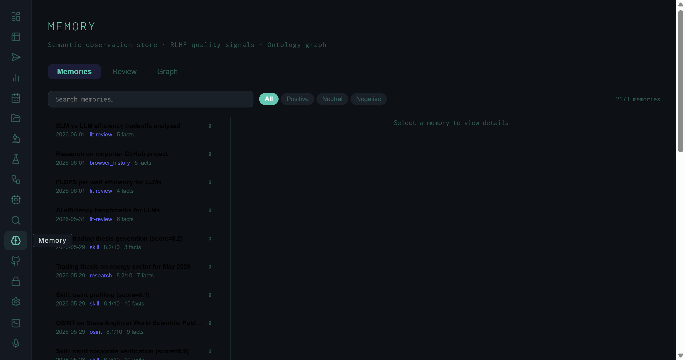
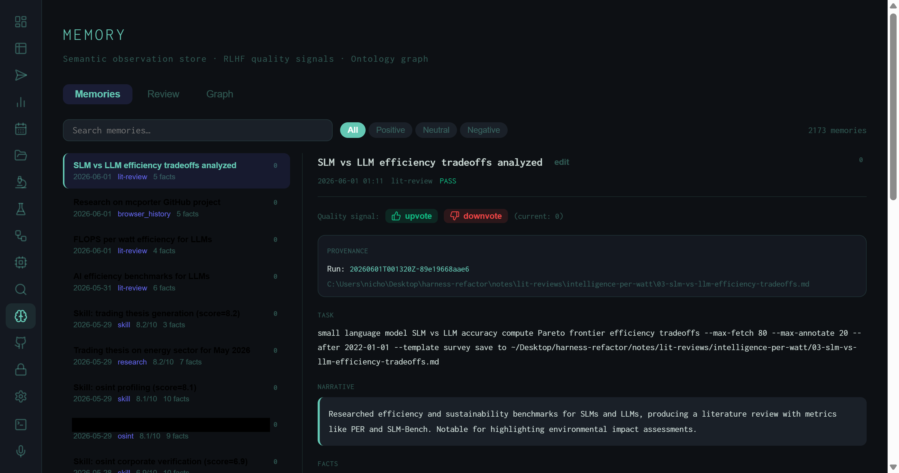

The Memory View: 2,173 Observations, Quality Signals, and an Ontology Graph
Every run the harness completes writes structured observations into a persistent semantic store. The Memory view is the interface into that store: a paginated, searchable list of 2,173 memories across 87 pages, a detail panel with full provenance and inline RLHF quality signals, and a force-directed ontology graph that maps concept relationships across the entire accumulated corpus.
Most agentic systems treat each run as stateless. The harness deliberately does not. After every research task completes, the run is decomposed into discrete observations — named facts extracted from the synthesis, tagged with source type, quality score, and task provenance — and written into a ChromaDB-backed semantic store. The Memory view is how you inspect and curate what the system has learned.
Memory subtitle: Semantic observation store · RLHF quality signals · Ontology graph — three distinct functions in one view.
The Memories List
The default tab shows all accumulated memories in reverse-chronological order. As of this writing the store holds 2,173 entries across 87 pages.

The Memories tab: 2,173 observations, paginated 25 per page, filterable by sentiment and searchable by content.
Each row in the list is a memory card carrying four pieces of inline metadata: the date the observation was created, its source type (a controlled vocabulary), a Wiggum quality score where applicable, and a fact count. The type vocabulary reflects the full range of things the harness does:
Research types
lit-review — arXiv/S2 synthesisresearch — general web + RAGbest_practices — structured rules extractionosint — open-source intelligence
System types
skill — skill-level performance observationsbrowser_history — browser task observationsmarket — market signals tasksresearch — general synthesis outputs
The filter bar at the top offers four views: All, Positive, Neutral, and Negative. These map directly to the RLHF sentiment attached to each memory. The free-text search box queries against memory titles and narrative content. Together they make it possible to, for example, find all positively-rated lit-review observations from a specific domain without scrolling through 87 pages.
The Detail Panel
Clicking any memory opens a full detail panel on the right. This is where the semantic structure of the memory store becomes concrete.

Detail view for a lit-review memory: run ID, output path, full task string, narrative summary, upvote/downvote quality signals, and extracted facts.
The detail panel is structured around four sections:
20260601T001320Z-01e19668aae6) and the exact output file path on disk. Every memory is traceable to the run that produced it.
The quality signal mechanism is the most consequential part of the detail panel. The upvote/downvote interface is not cosmetic — every interaction writes a labeled preference pair to the RLHF store. As the harness accumulates signal, those pairs become the training data for direct preference optimization. The pipeline from "human rates a run output" to "model improves on similar tasks" runs through this UI.
The Review Tab
Between the Memories list and the Graph sits a Review tab. This surfaces memories that have not yet received a quality signal — newly created observations awaiting human judgment. The workflow is: run completes → memory is written → memory appears in Review → human votes → memory moves to the rated pool. Keeping the Review queue short is a proxy for how current the preference signal is.
The Ontology Graph
The Graph tab renders all 2,173 memories as a force-directed network. Nodes are concepts extracted from memory narratives; edges connect concepts that co-occur across runs. The layout is physics-simulated: related concepts cluster, isolated observations drift to the periphery. The result is a visual map of what the harness knows and how those topics are connected.
Note: The graph requires a separate API call that builds the full ontology at render time. With inference running concurrently on the same machine (e.g. lit review jobs), the graph endpoint can time out. Switch away and back to retry once the model server is free.
At 2,173 nodes the graph is dense. The intended use is not to read individual nodes but to identify clusters — topic areas where the harness has accumulated concentrated signal — and gaps, where nodes are sparse or isolated. A well-used harness over time produces a graph whose cluster structure mirrors the research agenda: dense in areas of repeated investigation, sparse at the frontier.
What the Memory View Enables
The practical use cases for the Memory view fall into three categories:
Provenance lookup
When a run output contains a claim you want to verify, search the memory for the task string or run ID to find the exact source file and the full task that generated it.
Quality curation
The Review queue surfaces unrated memories. Regular curation keeps the RLHF signal fresh and ensures the preference store reflects current quality standards, not just historical runs.
Coverage mapping
The Graph view shows which topics have deep coverage (dense clusters) and which are underexplored (isolated nodes). Use it to identify where the next research batch should focus.
Signal-guided retrieval
Filter to Positive memories only, then search a domain. The result is a curated subset of the highest-rated prior research on that topic — a fast orientation before running new tasks.
The Numbers
As of May 19, 2026: 2,173 memories across 87 pages. The store has been accumulating since the harness was first deployed, and includes research, lit-review, OSINT, skill-level, and browser-task observations. The oldest entries are from early experiments; the newest reflect lit reviews kicked off minutes before this screenshot was taken. The store grows by 4–10 new observations per run depending on how many discrete facts the synthesis produces.
The memory store doubles as the harness's institutional knowledge. Any task that has been run before leaves a trace that future runs can learn from — through explicit retrieval, through RLHF signal, or through the DPO pairs that quality votes eventually generate.